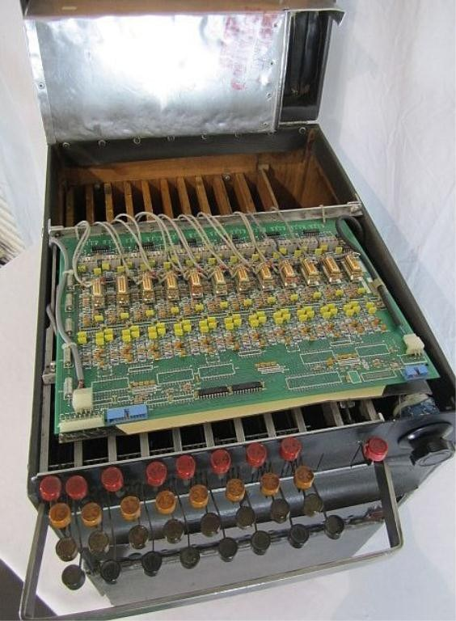
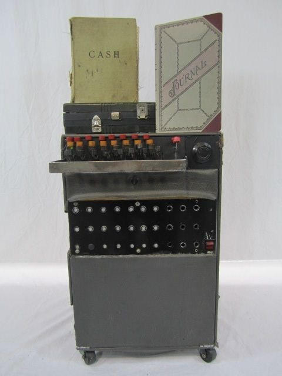
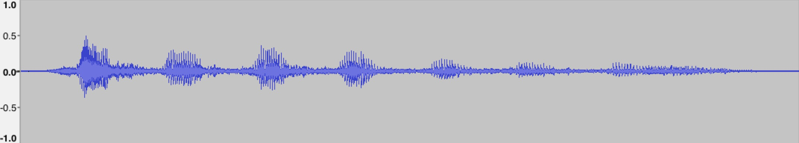
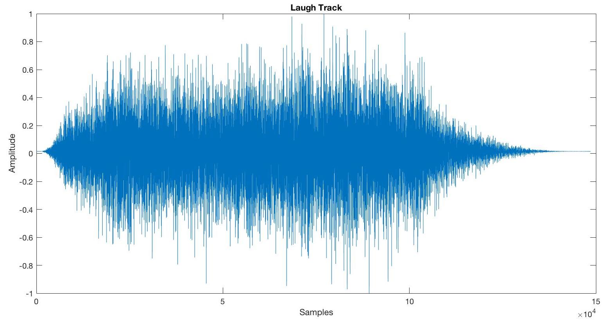

A laugh track, invented by American sound engineer Charles Douglass, is a separate soundtrack for a recorded comedy show containing the sound of audience laughter. During tapings of early radio and television shows, the performances of the actors and crew could be controlled, but live audiences could not be relied upon to laugh at the correct moments. Douglass extracted laughter and applause from live soundtracks recorded, and then placed the recorded sounds into a tape machine known as the "laff box". Douglass used a keyboard to select the style, gender and age of the laugh as well as a foot pedal to time the length of the reaction. Inside the machine were 320 different laughs on 32 tape loops, 10 to a loop. Since the tapes were looped, laughs were played in the same order repeatedly.
 My project is intended to replicate the overall sound of a laugh track, but using only a single recording of my voice. Such a tool could be useful for production effects in both music and sound, as it would construct the sound of a crowd of unsynchronized voices.
The recording of a single laugh stream is completed using Audacity, as only a clean version of a laugh is required, with no effects. After recording, it must be ensured that there is no clipping and no unwanted noise or sounds that could affect the detection algorithm. Below is an example clean recording of a laugh:
In order to simulate a crowd of laughs, the single laugh is duplicated into multiple streams. The number of streams is configurable. After duplication, each stream is pitch-shifted to a random level, within a range. This is in order to construct a variety of different voices with different tones, both lower and higher. Although this doesn't exactly simulate male and female voices very accurately, it is a rough estimation. The pitch-shifted streams are also time-stretched in order to maintain the same length is the original stream. Both these processes are completed using an implementation of a phase vocoder.
The phase vocoder performs a short-time FFT and then an inverse short-time FFT. In order to time-stretch the signal, a larger hop size for the overlap-add operation in the synthesis section is used relative to the analysis section. This produces more samples at the output than the input. Thus, the signal can be pitch-shifted by playing it at a higher sampling rate, producing a higher pitch of the signal of equal length.
This phase vocoder implementation was taken from Pitch Shifting and Time Dilation Using a Phase Vocoder in MATLAB.
Upon recording, there will inevitably by a short period of silence at the beginning of the audio file. This file needs to be detected and removed from the audio signal in order for the resulting laugh to be continuous in nature, as the silence could be mixed into the stream. This was completed using the 'TrimStart' extraction option of the miraudio operator in the MIRtoolbox in MATLAB.
People have different and unique patterns of laughing. The temporal envelope of each laughing burst, or grain, varies for different people in the overall laughing stream. I attempt to mimic these variations by shuffling around the laughing bursts of each of the pitch-shifted streams. The onsets of each burst is calculated using the 'Valleys' option of the mirpeaks operator in the MIRtoolbox, after converting the signal into mirenvelope form. These onset indices are stored as indicators of the start of each segment. These are then used to randomly shuffle each segement of each stream. However, the last segment is left in its position, as it was found that altering this last laughing burst would cause the overall stream to end abruptly.
The 'Valleys' functionality turned out to be a very good indicator for the laugh onsets. Although it is an estimate, the contours of my laugh, which produces very distinct bursts with and very short silences in between, made the onset detection quite easy. However, if the recorded laugh was more continuous in nature, this 'Valleys' detection may not work. In this case, a consonant detection algorithm may be required, perhaps using zero-crossing rate as an indicator of onsets.
In a sitcom taping with a live audience, a studio is used to contain both the live set, actors, and the crowd. Thus, the recording of laughter is completed in a medium to large sized room. In order to create the effect of this environment, the impulse response of an auditorium was downloaded from the Open AIR Library. The impulse recorded at Central Hall (Section 3C) was used after testing various other rooms. This impulse was then convolved with the laughter streams.
A chorus effect was applied to each laugh stream in order to create a richer overall sound. This was completed using the audioexample.Chrous method in the Audio System Toolbox in MATLAB. A delay of 0.05s and wet/dry ratio of 0.6 was found to be suitable.
The amplitudes of each stream was randomly varied in order to create the effect of louder and quieter voices.
Slight delays were randomly assigned to streams in order to increase the perception of multiple voices.
The result of all the combined stream duplications, segmentation, and effects described above produced a very good laugh track. You will most likely laugh along.
Although many impulses were tested, the reverb added to the laugh track is still too strong. The clean version of the output is preferable in my point of view, as it sounds more similar to the laugh tracks used in television shows. Although those shows are recorded in studios of decently-sized rooms, the live audience laughter is most likely altered in production to reduce any reverb.
It was desired to modify the original audio to simulate the laughter of both male and female voices. It was found that pitch-shifting worked ok when decreasing the pitch, but increasing it of any great length only made my voice sound sqeaky. Altering a male voice to sound female, or vice versa, is very difficult, and pitch-shifting was not successful in doing so. However, since there are so many streams layered on top of each other, it is difficult to hear this limitation.
As previously mentioned, my the onsets of own laugh was easy to detect using the 'Valley' functionality. If a more continuous laugh is used, the onsets may not be successfully detected.
A zip of all the MATLAB code, with impulse response file and sample audio input file can be downloaded here.
Laugh synth can be run by calling the laughSynth function in MATLAB with the following parameters:
inputAudio = input audio filename
sampleRate = sampling frequency
streamCount = number of streams to create
reverbFlag = 0 to disable reverb, 1 to enable reverb
For example, the following takes in the audio file 'laugh.wav' with sampling frequency 44100, creates 20 streams, does not add reverb, and returns an array containing the resulting laugh track signal:
outputAudio = laughSynth('laugh.wav', 44100, 20, 0);
The ouput audio array can be played using the soundsc function, or any other function that plays audio from an array. The file IRauditorium.wav is required to be in the same directory in order to add reverb.
A sample input audio laugh file can be downloaded here.
Armstrong, Jennifer Keishin. 2016. "Where Does Canned Laughter Come From - And Where Did It Go?" Last modified 26 September 2016. http://www.bbc.com/culture/story/20160926-where-does-canned-laughter-come-from-and-where-did-it-go.
MathWorks. "Pitch Shifting and Time Dilation Using a Phase Vocoder in MATLAB." https://www.mathworks.com/help/audio/examples/pitch-shifting-and-time-dilation-using-a-phase-vocoder-in-matlab.html.
Open Acoustic Impulse Response (Open AIR) Library. "Central Hall, University of York." http://www.openairlib.net/auralizationdb/content/central-hall-university-york.
University of Jyväskylä. "MIRtoolbox." Last modified 11 February 2018. https://www.jyu.fi/hytk/fi/laitokset/mutku/en/research/materials/mirtoolbox.